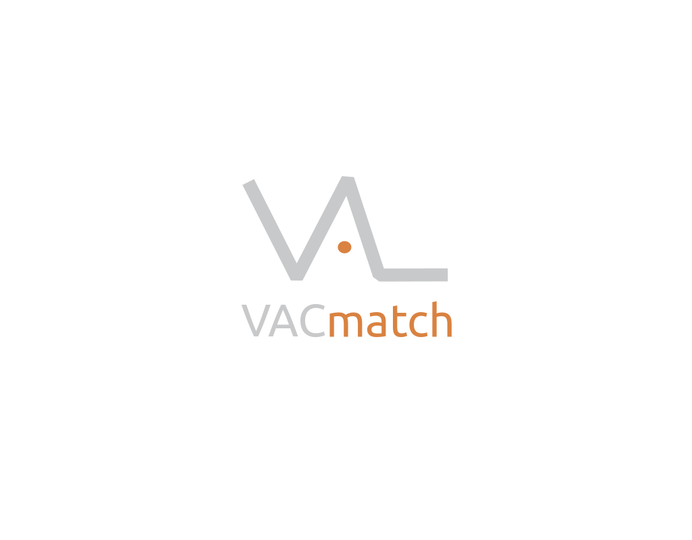
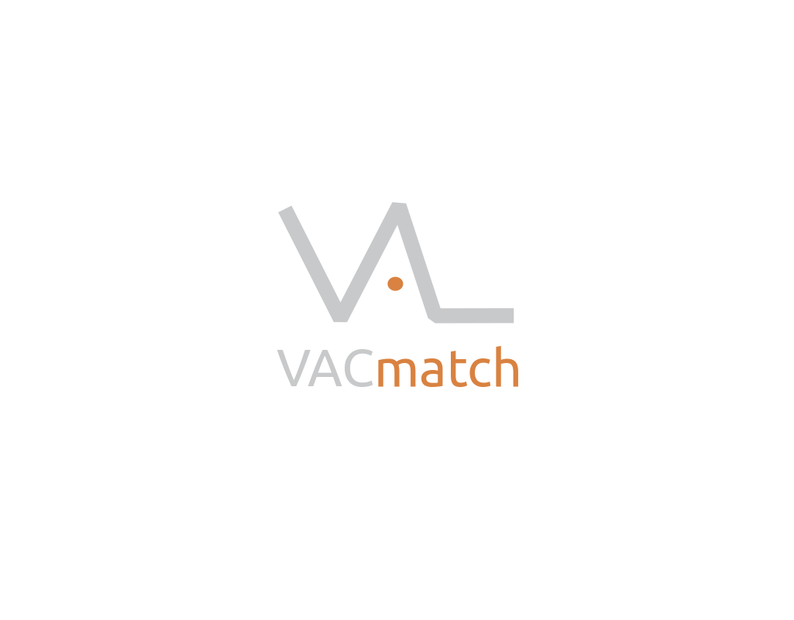
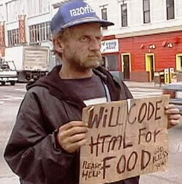

Sed Hackers!
castrinho8.github.io/be-hackers
Creative Commons
Reconocimiento - Compartir igual
Basada en la charla:
Sed hackers! de Vı́ctor Terrón que tiene una licencia Creative Commons Atribución-Compartir igual 4.0 Internacional.
Pablo Castro Valiño
@castrinho18
Estudiante de Ingeniería informática
Secretario de GPUL

 


El futuro profesional de muchos
Consultoria

Indra, Everis y demás cárnicas
Startups y emprender
Lo que te cuentan
La realidad
Consejos
- Con xeito
- Aprendes mucho y de lo que quieres
- Conoces gente muy interesante
- Curras muchiiisimo
- Cuidado con las subvenciones y el mensaje de que emprender es happy world
1º consejo
Aspira a trabajar en un sitio guay
Horarios flexible, teletrabajo, sin traje, empresa horizontal...
Igalia, CartoDB, Valve...
Hay sitios intermedios que también molan para empezar
Trabe, Trileuco, Mobgen...
"Para currar en un sitio de verdad
¡Hay que ser un hacker!"
Hacker
Persona que disfruta explorando los limites de lo posible.
Puede ser modificando software o hardware, incluyendo construir, reconstruir, modificar y crear software (u otra cosa), con el
objetivo de mejorarlo, hacerlo más rápido, darle nuevas funcionalidades o hacer que haga algo para lo que no estaba destinado inicialmente.
La carrera
Vais a ver muchas cosas feas y alguna guay
Profesores flojillos, los buenos son escasos (aprovechadlos mucho)
Aprendereis un poco de aquí y otro de allí
"El mundo ya está lleno de gente que se limitó a aprobar asignaturas, incluso con buena nota".
2º consejo
Aprovechad el tiempo,
¡HACED COSAS!
¿Cosas? ¿Pero qué cosas?
Muevete!
- Ingeniero == programador != powerpoinista
- Ingles: No importa la sintaxis -> importa entenderte
Lee documentación, videos tecnicos en youtube, ve a conferencias (FOSDEM) - GNU/Linux como SO y software libre
- Meteros en asociaciones y fregados
- Participa en un proyecto de Software Libre
- GitHub es tu curriculum
"El expediente sólo sirve para que te den becas"
Asociaciones, GPUL en este caso ;)
GNU/Linux
Software/Hardware/Cultura Libre
Aprender mogollón
Buen rollo
Ayudamos a quién lo necesite
Conferencias internacionales
Charlas y talleres
Algún que otro viaje
Las empresas de verdad lo valoran mucho, el 80% de mis entrevistas han ido sobre esto
Conoces gente muy top (agenda) KDE, startups chulas, Google...
Pierdes la verguenza, miradme a mi dando una charla
Métete en un proyecto de software libre
Por más que algunos profesores que tendréis discrepen
No hay nada que impresione más en un currı́culum
Encontrad un proyecto que os guste, y empezad poco a poco
Parches muy pequeños al principio
GitHub (o equivalente) es tu nuevo curriculum
Olvida subversion y aprende Git
Sube tus prácticas, presentaciones, landings, TFG, etc. a GitHub
Para las empresas guays, es lo único que importa
Conclusiones
No os conformeis con la consultoria: !Aspirad a más!
No dejeis de aprender: hackatones, charlas, conferencias...
Se activo y no solo pasivo: da charlas, organiza eventos
Participa en un proyecto de Software Libre
@castrinho18
pcastro@gpul.org
@gpul_